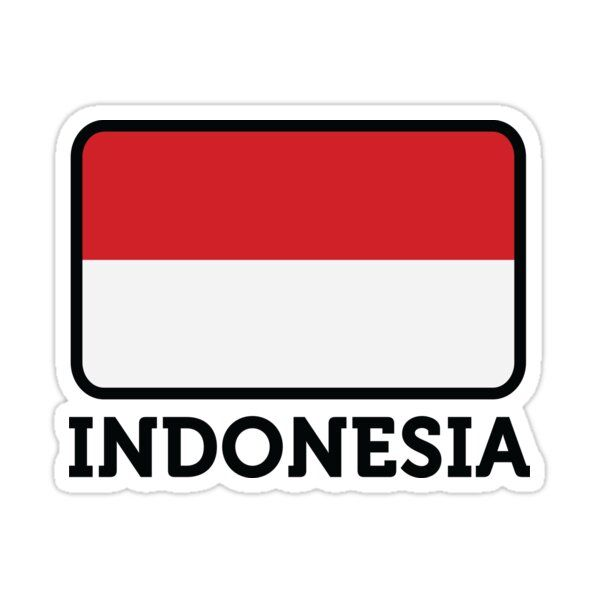
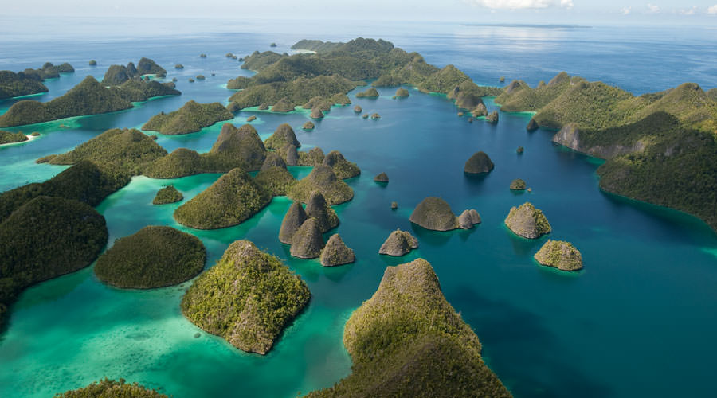
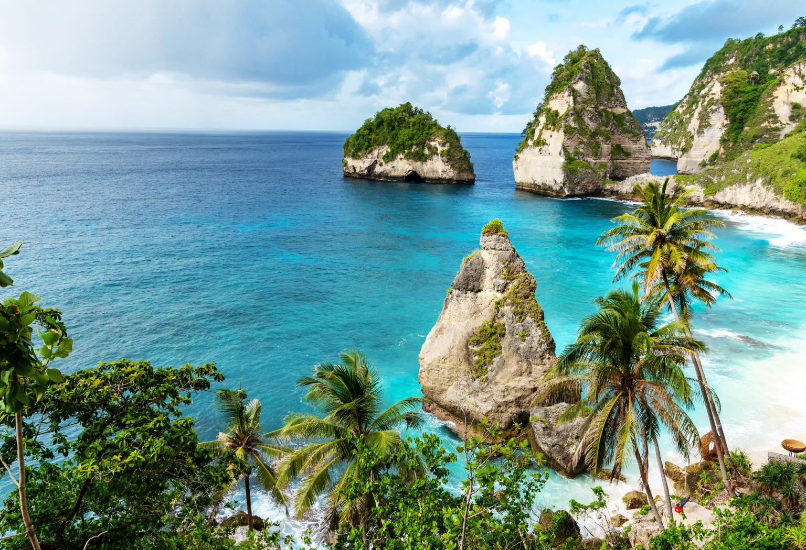

Le isole dell’arcipelago indonesiano si estendono per quasi 5000 km dal continente asiatico all’Oceano Pacifico. Ricche di risorse naturali e con un’incredibile varietà di culture, per secoli hanno attirato mercanti cinesi e indiani, colonizzatori europei, missionari, avventurieri, compagnie minerarie, intrepidi viaggiatori e turisti. Le isole sono abitate da 300 gruppi etnici con culture distinte, che parlano 365 lingue e dialetti. A dispetto del motto nazionale ’unità nella diversità’, queste culture sono minacciate dal processo di indonesianizzazione, a mano a mano che le isole vengono unificate sotto il dominio centralizzato di Java. È stato difficile difendere il concetto multiculturale di forza insita nella eterogeneità di fronte a una simile frammentazione geografica e culturale, e il governo indonesiano ha optato per un potere forte, centralizzato e poco democratico.


La bandiera dell’Indonesia è uno dei disegni di bandiera più semplici di qualsiasi paese del mondo. Semplici barre orizzontali rosse (in alto) e bianche (in basso) costituiscono i due colori della bandiera. Il significato dei colori rosso e bianco della bandiera indonesiana è stato dibattuto. Uno di questi è che il bianco rappresenta la purezza e il rosso rappresenta il coraggio. Secondo un’altra teoria, i colori rosso e bianco combinati rappresentano un essere umano completo, con il rosso che denota il corpo umano o la vita fisica e il sangue, e il bianco che denota l’anima o la vita spirituale.